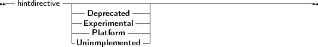

Most identifiers (constants, variables, functions or methods, properties) can have a hint directive prepended to their definition:
_________________________________________________________________________________________________________Hint directives

___________________________________________________________________
Whenever an identifier marked with a hint directive is used in the rest of the source code, then a warning will be displayed, corresponding to the hint that was specified.
The following are examples:
Const
AConst = 12 deprecated; var p : integer platform; Function Something : Integer; experimental; begin Something:=P+AConst; end; begin Something; end. |
This would result in the following output:
testhd.pp(11,15) Warning: Symbol "p" is not portable
testhd.pp(11,22) Warning: Symbol "AConst" is deprecated testhd.pp(15,3) Warning: Symbol "Something" is experimental |